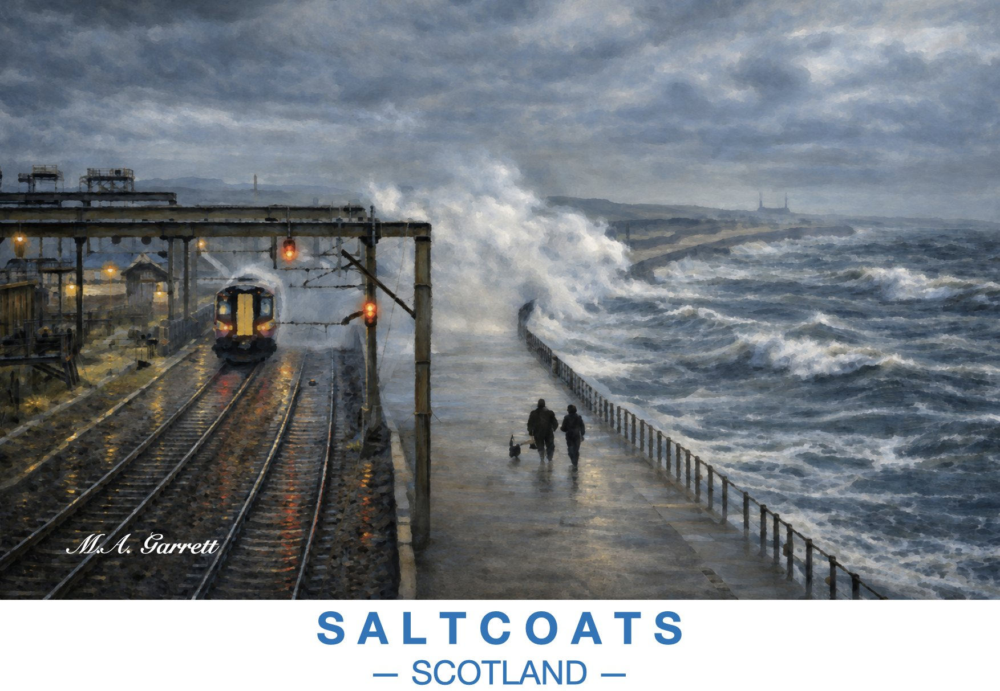

Storm Waves, Saltcoats Railway
Heavy seas break over the promenade beside the railway at Saltcoats as a train approaches under the signals and a couple walk their dog along the sea wall.
Paintings of the Ayrshire coast

Heavy seas break over the promenade beside the railway at Saltcoats as a train approaches under the signals and a couple walk their dog along the sea wall.